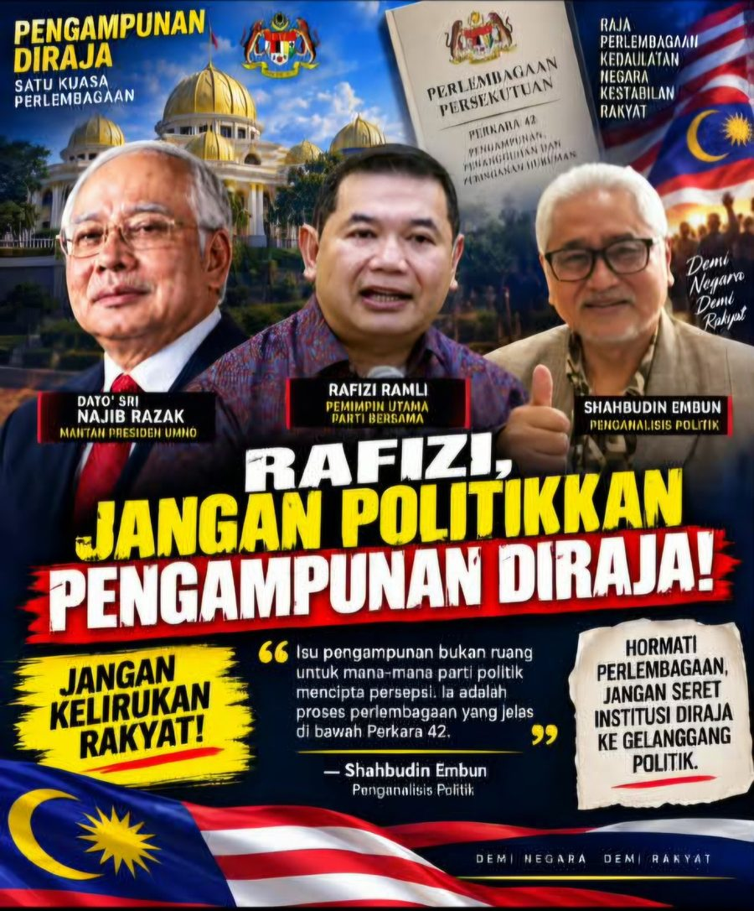

JANGAN POLITIKKAN ISU PENGAMPUNAN NAJIB — RAFIZI JANGAN KELIRUKAN RAKYAT
Saya ingin memberi satu peringatan yang tegas kepada Rafizi Ramli:
Jangan kerana perbezaan politik, isu pengampunan diraja pula mahu dijadikan modal untuk mengelirukan rakyat.
Hari ini, kita bercakap tentang satu perkara yang sangat jelas dalam kerangka Perlembagaan Persekutuan — kuasa pengampunan ialah mekanisme perlembagaan yang memang wujud dalam negara kita.
Perkara 42 memperuntukkan kuasa memberikan pengampunan, penangguhan dan peringanan hukuman mengikut bidang kuasa yang ditetapkan. Bagi kesalahan di Wilayah Persekutuan, kuasa tersebut terletak pada Yang di-Pertuan Agong dalam kerangka Perkara 42. Jabatan Peguam Negara sendiri telah menjelaskan perkara ini.
Maka, apabila keputusan telah dibuat melalui proses perlembagaan yang ditetapkan, jangan cuba mengheret rakyat supaya melihatnya semata-mata melalui kaca mata politik.
Rafizi meminta PMX dan pimpinan PH menjelaskan perkara tersebut.
Tetapi PMX sendiri hari ini sudah memberikan penjelasan bahawa peranan beliau adalah berkaitan nasihat mengenai implikasi undang-undang, kestabilan negara dan prinsip negara hukum, manakala Perlembagaan menetapkan kuasa pengampunan kepada Yang di-Pertuan Agong.
Jadi apa lagi yang mahu dipolitikkan?
Hukuman mahkamah tetap hukuman mahkamah.
Pengampunan diraja pula ialah proses perlembagaan.
Kedua-duanya mempunyai tempat masing-masing.
Saya telah menulis perkara ini beberapa hari lalu, sebelum keputusan hari ini:
“JANGAN POLITIKKAN INSTITUSI DIRAJA — JANGAN PILIH-PILIH PERLEMBAGAAN.”
Saya ulangi pendirian tersebut hari ini.
Kita boleh tidak bersetuju dengan seseorang ahli politik.
Kita boleh mengkritik dasar kerajaan.
Kita boleh berbeza pendapat mengenai Datuk Seri Najib.
Tetapi jangan sampai perbezaan politik menyebabkan kita mempertikaikan mekanisme yang telah diperuntukkan oleh Perlembagaan.
Kalau benar kita mahu mempertahankan Rule of Law, maka kita juga mesti menghormati Perlembagaan sebagai undang-undang tertinggi negara.
Rafizi juga harus memahami satu perkara:
Rakyat tidak perlu dikelirukan dengan seolah-olah keputusan pengampunan ini adalah keputusan politik PMX.
Keputusan hari ini datang melalui Lembaga Pengampunan Wilayah Persekutuan dan diperkenankan oleh Yang di-Pertuan Agong.
Maka saya menyeru semua pihak, termasuk Rafizi Ramli:
JANGAN POLITIKKAN PENGAMPUNAN DIRAJA.
JANGAN KELIRUKAN RAKYAT.
JANGAN SERET INSTITUSI PERLEMBAGAAN KE GELANGGANG POLITIK.
Kalau mahu mengkritik, kritiklah dengan fakta.
Kalau mahu bertanya, bertanyalah berdasarkan undang-undang.
Tetapi jangan membina persepsi seolah-olah kerajaan atau PMX mempunyai kuasa untuk membuat keputusan yang sebenarnya berada dalam kerangka kuasa pengampunan di bawah Perlembagaan.
Perlembagaan tidak mengenal warna parti.
Perlembagaan tidak mengenal PH, PKR, AMANAH, DAP, UMNO atau mana-mana parti.
Yang kita wajib hormati ialah Perlembagaan dan institusi negara.
JANGAN KERANA POLITIK, KITA LUPA PERLEMBAGAAN.
— Shahbudin Embun